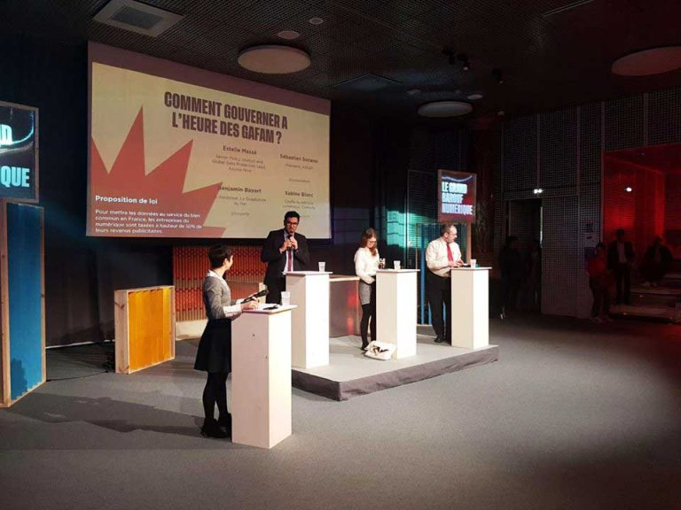
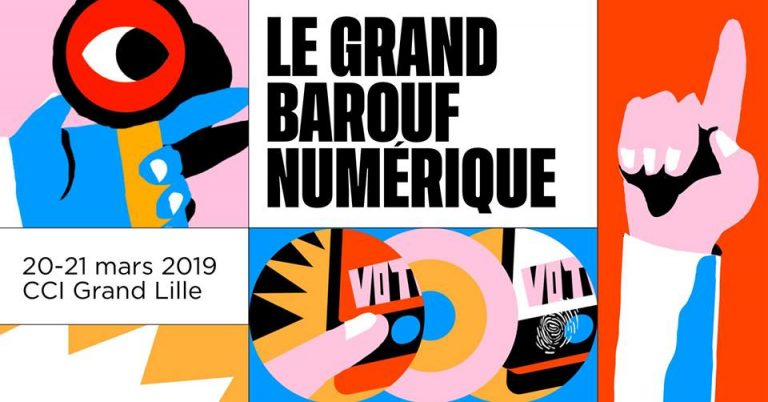
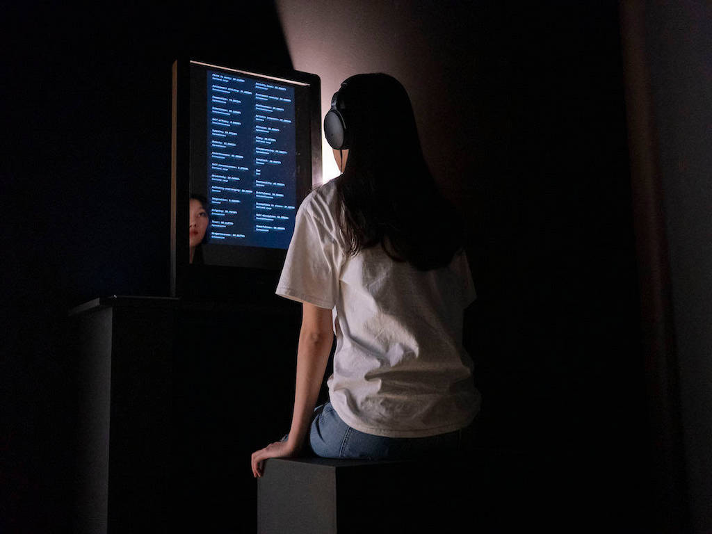
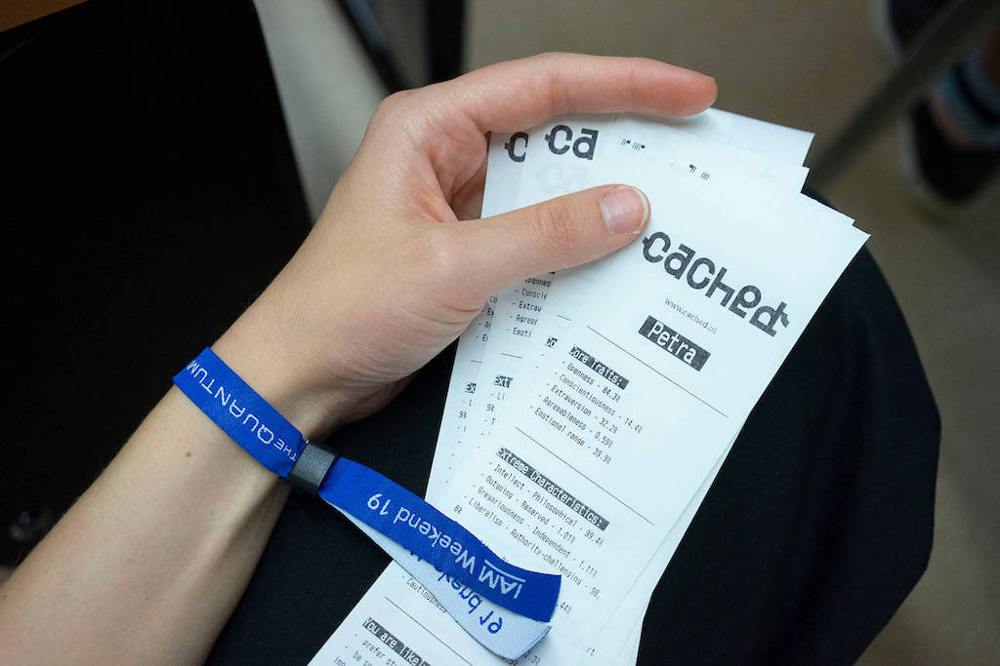

Le Grand Barouf Numérique is a participatory and prospective event that opens the debate on the issue of our digital lives.
On this occasion, we were invited with obsolete.studio by the event organizer Ouishare to co-curate the exhibition programme. We presented the artworks “Threads” by Fabien Zocco and the Cached collective’s experience.
“Threads” by Fabien Zocco is a network installation; a “bot” (automatic program hosted on networks) sends mysterious and cryptic emails to thousands of people whose email addresses have been randomly retrieved from the Internet.
The Cached experience is an immersive narrative that reveals how computers have learned to interpret our online presence. Powered by the IBM Watson psychometric algorithm, Cached analyzes the text of your individual Facebook or Twitter posts to generate a psychological profile that describes your specific personality, habits, and predilections.



